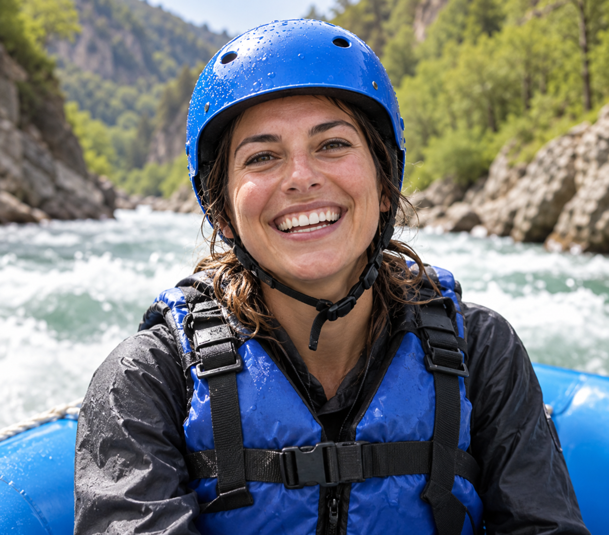

Our mission is to create safe, exciting, and unforgettable whitewater experiences. We bring people closer to nature through professionally guided adventures built around teamwork, discovery, and respect for the rivers we explore.


Our mission is to create safe, exciting, and unforgettable whitewater experiences. We bring people closer to nature through professionally guided adventures built around teamwork, discovery, and respect for the rivers we explore.
Kiskeya Rapids began with a small team of river enthusiasts who believed that adventure could connect people with nature and with one another. What started as weekend rafting trips soon became a professional company dedicated to safe and memorable outdoor experiences. Today, we welcome beginners, families, and experienced adventurers who want to discover the power and beauty of the river.